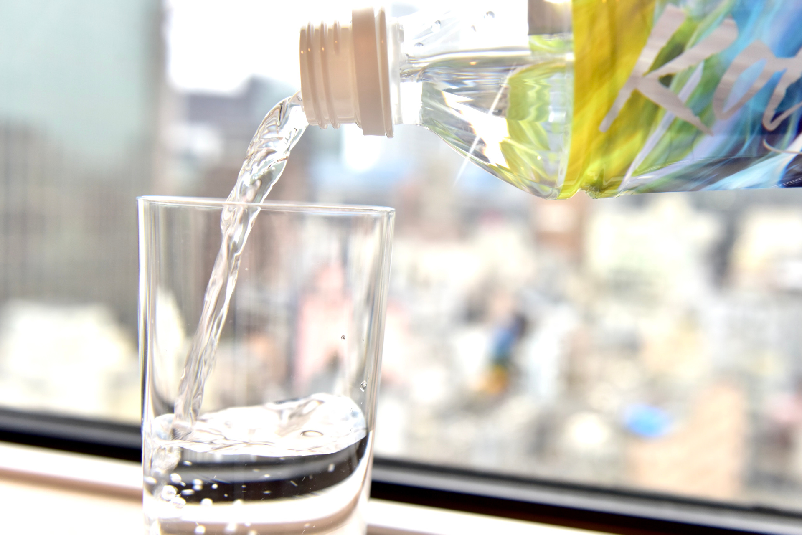
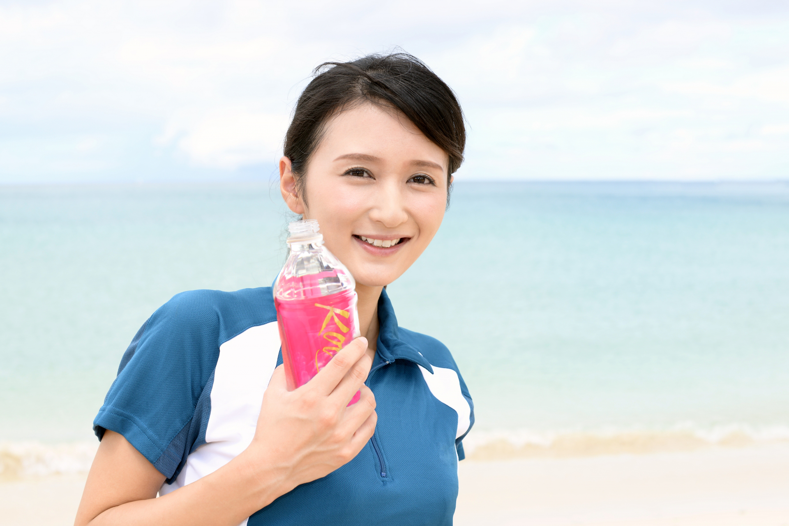

Concept /
飲む美容液×飲む温泉水
ナチュラルミネラルウォーター
温泉水「Kotohogi」
「JAPAN AQUA AWARDS 2022」金賞を受賞
温泉水「Kotohogi」は、2022年夏、一般社団法人日本アクアソムリエ協会が主催し、国内外の飲料水を格付けする「2022 JAPAN AQUA AWARDS」（通称アクアアワード）で金賞を受賞しました。
アクアアワードは、出展された国内外のミネラルウォーターを、水に精通するアクアソムリエ計317人が予備審査を行った上で、上級資格のアクアソムリエマイスターや学者、東京藝術大学デザイン科の講師らで組織する審査委員らが本審査を行い、その年の賞を決定します。
温泉水「Kotohogi」は、シリカやサルフェートをはじめ温泉のミネラル成分や、アンチエイジングとして注目を集めている「炭酸水素イオン」を豊富に含み、審査ではアクアソムリエの70％以上が「この水が好き」と回答し、「飲みやすく美容にいい成分が入っている」「人に勧めたい」などの評価を受けました。温泉水「Kotohogi」は、あなたの毎日を彩ります。
- メタケイ酸
- メタホウ酸
- 炭酸水素イオン
- シリカ
- サルフェート
ことほぎ温泉水は、「メタケイ酸」、「メタホウ酸」などの天然ミネラルに着目し、高級化粧品ブランド『ECLEAD（エクリード）』の主原料として使用してます。含有される豊富な温泉ミネラル成分を、身体の外からだけでなく中からも取り入れていただくことで、毎日の美と健康をサポートします。「飲む美容液×飲む温泉水」を合言葉に、ナチュラルミネラルウォーター温泉水『Kotohogi』は誕生しました。
[ことほぎ温泉水成分]
●温泉成分
pH値
電気伝導率
ラドン
密度
蒸発残留物
ナトリウムイオン
カリウムイオン
アンモニウムイオン
マグネシウムイオン
カルシウムイオン
ストロンチウムイオン
第一鉄イオン
ふっ化物イオン
塩化物イオン
硫酸イオン
硝酸イオン
炭酸水素イオン
炭酸イオン
メタケイ酸
メタホウ酸
遊離二酸化炭素
リチウム
マンガン
亜鉛
バリウム
8.5
50.1 mS/m
34.3 Bq/ks
1.0002 g/㎤
0.32 g/kg
87.1 mg/kg
5.9 mg/kg
0.2 mg/kg
12.6 mg/kg
20.6 mg/kg
0.1 mg/kg
0.1 mg/kg
0.3 mg/kg
9.1 mg/kg
7.2 mg/kg
0.5 mg/kg
314.8 mg/kg
1.8 mg/kg
67.8 mg/kg
3.1 mg/kg
334.4 mg/kg
0.091 mg/kg
0.028 mg/kg
0.087 mg/kg
0.003 mg/kg
●栄養成分
硬度
ナトリウム
カリウム
リン
マグネシウム
カルシウム
サルフェート
シリカ
87.6 mg/㍑
80 mg/㍑
10 mg/㍑
10 mg/㍑
10.7 mg/㍑
17.6 mg/㍑
3 mg/㍑
54.4 mg/㍑
※＜温泉成分＞一般財団法人三重県環境保全事業団調べ＜栄養成分＞株式会社東邦微生物病研究所調べ
※温泉水は自然のものであり、温泉成分、栄養成分は上記から変動する可能性があります。
ナチュラルミネラルウォーターとは？
| 分 類 | ナチュラル ウォーター |
ミネラル ウォーター |
ボトル ウォーター |
|
|---|---|---|---|---|
| 品 名 | A ナチュラル ウォーター |
B ナチュラルミネラル ウォーター |
C ミネラル ウォーター |
D ボトル ウォーター |
まず、Aの「ナチュラルウォーター」。この原水は、特定の水源から採水された地下水。かつ、物理的・ 化学的処理（沈殿・濾過・加熱殺菌以外）を行なっていないものを指します。
Bの「ナチュラルミネラルウォーター」は、物理的・ 化学的処理（沈殿・濾過・加熱殺菌以外）を行なっていないナチュラルウォーターという分類のなかでも、特定のものにだけ記載することができます。それは大地の恵みであるミネラルが溶け込んだ地下水の場合で、温泉水「Kotohogi」はこれにあたります。
Cの「ミネラルウォーター」も、ナチュラルミネラルウォーターが原水。しかし、ミネラル分の調整を行なっていたり、複数の水源から採水したナチュラルミネラルウォーターの混合などを行なっていたりする場合は、こちらに分類されます。
Dの「ボトルドウォーター（または飲用水）」は、上記3つ以外の水。例えば、海洋深層水・水道水をボトリングしたものなどに、この表記がなされているようです。
※ミネラルウォーター類（容器入り飲用水）の品質表示ガイドライン（農林水産省）より
美容×健康×予防
アンチエイジングや疲労回復にも
カルシウムとマグネシウムを２：１の比率で含有しており、これは身体に吸収されやすい“黄金比の割合”といわれています。含有される豊富な温泉ミネラルは、身体の酸化予防や老化予防、疲労回復に効果があり、アンチエイジング成分として今特に注目を集めている「炭酸水素イオン」をトップクラス（１㎏当たり３１４ｍｇ）に含有しています。
炭酸水素イオンは、病気や老化の原因になる活性炭素に対して抗酸化作用があることが判明しており、健康、美容目的で注目されています。
3色のラベルデザイン
先人たちが”まほろばの地(素晴らしい場所)”と称した古都・奈良の地が持つ神聖なエネルギーや「飲む温泉水×飲む美容液」として美容や健康の増進に期待できる「ことほぎ温泉」の可能性や力を表現。カラフルなボトルが毎日に彩を添えます。
瑠璃（るり）
シルクロードの終着点の正倉院に収蔵されている「瑠璃杯」をイメージした色
八重桜（やえざくら）
奈良の花の「八重桜」をイメージした色
彩（いろどり）
奈良の歴史やストーリーをイメージした色
お問い合わせ
ご質問など、お気軽にお問い合わせいただけます。
0120-32-1646（美に色白）
受付時間は、祝日・年末年始を除く月～金の9:00～17:00です。